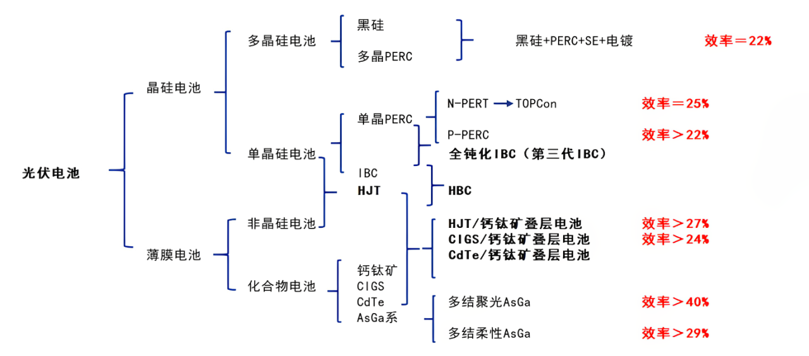

work-notes-risen
工作笔记
常见概念
根据背板是否为玻璃， 晶硅组件分为单玻组件和双玻组件
根据电池芯片两面是否均能发电，晶硅组件可进一步分为单面组件和双面组件，双面组件的电池芯片两侧均能够发电，电池芯片背面（即面向地面的 一侧）主要吸收地面反射光进行发电，根据背板材质和土地材质不同，双面组件的发电效率比单面组件高5%-19%。参考
单瓦发电量？
一体膜？预交联？预交联度？
光伏电池分类

PREC：钝化发射极背面电池
PERC (Passivated Emitter and Rear Cell) ，意思是"钝化发射器和后部接触 "的太阳能电池，被称为PERC太阳能电池片， 是从常规铝背场电池(BSF)结构自然衍生而来。
TOPCon：隧穿氧化层钝化接触技术。
TOPCon 电池是一种基于选择性载流子原理的隧穿氧化层钝化接触（Tunnel Oxide Passivated Contact）太阳能电池技术，其 电池结构为N型硅衬底电池，在电池背面结构为：超薄氧化硅+掺杂硅薄层，形成了钝化接触结构，有效降低表面复合和金属接触复合。电池背表面为H型栅线电极， 可双面发电。
HJT（SHJ)：本征薄膜异质结
丁东.晶硅TOPCon与IBC太阳电池设计、制备与性能[D].上海交通大学,2021.DOI:10.27307/d.cnki.gsjtu.2021.000111.
制备SHJ电池一般以少子寿命较高的n型单晶硅作为基底，硅片电阻率~1Ω‧cm，厚度在80~160μm，在硅片正表面先沉积厚度小于10nm的本征非晶硅（写为a-Si:H(i)），再沉积一层硼掺杂的非晶硅（写为a-Si:H(p)）以形成P-N结（沉积温度<200℃）；在基底背表面同样先沉积厚度小于10nm的a-Si:H(i)层，再沉积一层磷掺杂的a-Si:H(n)层作为背表面场，沉积有非晶硅的正反两侧覆盖透明导电氧化层（TCO）用于载流子的收集，最后通过丝网印刷方法在两侧印刷低温正负电极浆料（<250℃）

本征非晶硅、单晶硅、多晶硅
| 参数 | 本征非晶硅（i-a-Si） | 单晶硅（c-Si） | 多晶硅（poly-Si） |
|---|---|---|---|
| 结构 | 短程有序、长程无序（非晶态） | 长程有序的单晶结构 | 多晶态，由小单晶晶粒组成，含晶界 |
| 代表字母 | i-a-Si | c-Si | poly-Si |
代表字母
- i-a-Si：i 代表本征（无掺杂），a-Si 为非晶硅（Amorphous Silicon）。
- c-Si：c 代表晶态（Crystalline），通常指单晶硅。
- poly-Si：poly 代表多晶（Polycrystalline）。
常见英文缩写
| 缩写 | 英文 | 含义 |
|---|---|---|
| TOPCon | Tunnel Oxide Passivated Contact | 隧穿氧化层钝化接触 |
| PERC | Passivated Emitter And Rear Cell | 钝化发射极背面电池 |
| HJT | Heterojunction with Intrinsic Thin Layer | 本征薄膜异质结 |
| IBC | Interdigitated Back Contact | 交叉指式背接触 |
| HBC | Heterojunction Back Contact | 异质结背接触 |
| PL | Photoluminescence | 光致发光 |
| EL | Electroluminescent | 电致发光 |
| MQT | Module Quality Test | 组件质量测试 |
| MST | Module Safety Test | 组件安全测试 |
| TC | Thermal cycling test | 热循环测试（MQT 11） |
| HF | Humidity-freeze test | 湿冻试验（MQT 12） |
| DH | Damp heat test | 湿热测试（MQT 13） |
| PID | Potential Induced Degradation | 电位诱导衰减（MQT 21） |
| LID | Light-Induced Degradation | 光致衰减 |
| LeTID | Light And Elevated Temperature Induced Degradation | 光照及高温过程中引起的功率衰减 |
| UV | Ultraviolet | 紫外 待补充 |
| MC | 待补充 | 待补充 |
| EPE | ExpandablePolyethylene | 可发性聚乙烯，又称珍珠棉 |
| EVA | Ethylene Vinyl Acetate | 乙烯-醋酸乙烯共聚物 （也称之为乙烯-乙酸乙烯共聚物） 是由乙烯（E）和乙酸乙烯（VA）共聚而制得 |
| EEA | Ethylene Ethyl Acrylate | 乙烯-丙烯酸乙酯 |
| PA | Polyamide | 聚酰胺 |
| TPT | Tedlar/PET/Tedlar | 聚氟乙烯复合膜 |
| PET | Polyethylene terephthalate | 聚对苯二甲酸乙二酯 |
| DOE | Design of Experiment | 试验设计 |
LID vs LeTID
参考
20230801-TUV-可靠性标准机理及失效分析交流会议-LeTID test specification-Risen.pdf
| 光衰种类 | 电池片 | 光衰原因 | 特性 | 消除方案 |
|---|---|---|---|---|
| LID | 多发生于P型电池 常规单晶>多晶 |
BO对（硼氧缺陷对）的形成 | 1、无硼消失, 2、低氧下降 3、随时间延长衰减逐渐增加，后趋于稳定 |
掺Ga，低氧工 低剂量辐照+退火 低剂量电流注入+退火 |
| LeTID | 多发生PERC电池 多晶>单晶 |
可能机理： 1、金属杂质 （不同位置） 2、背面钝化氢环境导致很多缺陷被氢钝化，光照和高温下氢键容易断裂 |
1、与B/O关系不大 2、通常温度>50℃比较明显 3、随时间延长衰减增加，后逐渐恢复，后趋于稳定 4、测试温度越高，恢复越快 |
1、P/Al吸杂; 2、降低烧结温度 3、高强度激光退火 |
组件编码方式
产品型号编码方式
| XXX | XXX | - | X | - | XXX | XXX | |
|---|---|---|---|---|---|---|---|
| 含义 | 日升组件 | 电池片数量 | 分隔符 | 电池片尺寸 | 分隔符 | 功率分档 | 组件工艺 |
| 示例 | RSM | 40 60 72 100 108 110 120 144 150 81 68 132 156 |
- | 6 7 8 9 10 11 |
- | xxx | M MDG BMDG HDG BHDG P PDG MI MB N NB BNDG NDGB HDGB BMTG |
例如：RSM60-6-330M 代表日升60片6英寸156.75或158.75电池片330瓦单玻单晶组件。
参数释义
电池片尺寸
| 电池片尺寸 | 含义 |
|---|---|
| 6 | 6 英寸 156.75 或 158.75 电池片 |
| 7 | 166 电池片 |
| 8 | 210 电池片 |
| 9 | 182 电池片 |
| 10 | 192R 矩形电池片 |
| 11 | 210R 矩形电池片 |
组件工艺
| 组件工艺 | 含义 |
|---|---|
| M | 单玻单晶组件 |
| MDG | 单面双玻单晶组件 |
| BMDG | 双面双玻单晶组件 |
| HDG | |
| BHDG | 双面双玻异质结组件 |
| P | 单玻多晶组件 |
| PDG | 单面双玻多晶组件 |
| MI | 单晶智能组件 |
| MB | 单晶全黑组件 |
| N | 单玻 N 型 TOPCon 组件 |
| NB | 单玻 N 型 TOPCon 全黑组件 |
| BNDG | 单面/双面双玻 N 型 TOPCon 组件 |
| NDGB | 单面/双面双玻全黑 N 型 TOPCon 组件 |
| HDGB | 单面/双面双玻全黑异质结 |
| BMTG | 双面透明背板单晶组件 |
组件条码编码
| XX | XX | XX | | | XX | XXXXX |
|---|---|---|---|---|---|
| 年代号：生产年份+25 | 月代号：生产月份+11 | 日代号：生产日期 | 防伪识别码 | 车间代号 | 流水号 |
例如：431201I0100001 代表 2018 年 1 月 1 日组件一车间生产的第一个组件。
组件制作流程
graph LR; 划片-->自动焊接-->叠层--外观和EL1测试-->层压--削边/目检-->装框/装接线盒
graph RL; 装框/装接线盒-->固化-->清洗外观-->功率测试-->安规测试--EL2测试-->分档-->包装
实验室测试流程
- OA 填写（材料）测试申请单
- 个人所在部门经理审批
- 实验室石经理审批
- 样品送至实验室门口，并放置测试申请单
- 实验室核对样品以及测试申请单
- 样品外观检查，无误后接受
光伏组件测试标准
IEC61215
测试时长
| 项目 | ||
|---|---|---|
| PID96 PID192 |
96小时 192小时 |
4天 8天 |
| HF10 HF20 |
10个循环，24h/循环 20个循环，24h/循环 |
10天 20天 |
| TC50 TC100 TC200 TC400 |
50，4h/循环 100，4h/循环 200个循环，4h/循环 400个循环，4h/循环 |
9天 17天 34天 68天 |
| DH500 DH1000 DH2000 |
500小时 1000小时 2000小时 |
21天 42天 84天 |
| UV15 UV30 UV60 |
15kWh，若200W，则75h 30kWh，若200W，则150h 60kWh，若200W，则300h |
3天3小时 7天 14天 |
| UV序列： UV15+DML+TC50+HF10 |
4+ +9+10=23天 |
MQT01 外观检测
不低于 1000 lux 的照度下，对每一个组件仔细检查
MQT02 最大功率确定
最大功率确定 Maximum power determination
700~1100
25~50℃
MQT03 绝缘测试
确定模块在带电部件和可触及部件之间是否有充分的绝缘。
- 耐压
61215：
61730：
- 绝缘
MQT04 温度系数的测量
测试点位数： （每 5℃一个点位）
温度区间：℃
开路电压 系数字母为
短路电流 系数字母为
最大功率 系数字母为 。
MQT05
标称模块工作温度(NMOT)测试
（在2021版意味着取消）
MQT06 STC下的性能
确定在STC (1000 ，25℃ 电池温度，IEC60904-3参考太阳光谱辐照度分布)下模块的电性能如何随负载变化。
根据SOP组件温度为25±1℃，测试光强为1000 ，根据IEC61215-2:2016，组件温度为25±2℃，AM：1.5。
要求：
-
样品恒温：0.5h，可靠：4h，标片：24h
-
检查组件（标片）的外观
-
校准标片：
-
连续闪三次，插拔线后，再闪一次，差值小与 0.5W
-
测被测组件
-
整理
MQT07 低辐照度下的性能测试
测试光强200 ，假如组件的实测功率为600W，低射照度下的测试值为116W，低辐照度系数为96.67%。
实测功率为600W时为1000 ，则低辐照度系数=116/(600*200/1000)=96.67%
MQT08 室外暴晒
在室外进行：在宁海，组件摆放角度为29±5°，光强需要达到至少500 以上才能采纳数据，累计辐照度达到。
MQT09 热斑耐久试验
Hot-spot endurance test
- 一块组件需要选取4片电池片，其中3片为漏电流最高的电池片，至少保证1片在边框附近，1片为漏电流最低电池片。
- 最佳阴影遮挡面积判定为阴影遮挡后的电流与组件初始状态下的Impp相近。如果二极管不启动的情况下，100%或完全遮挡面积为最坏遮挡面积。
- 测试时组件为短路状态（开路，短路，接负载），组件温度需在50±10℃，如光照一个小时后，电池片温度仍然在上升，需再进行4小时光照。
MQT10 紫外试验
UV预处理试验
测试时组件温度为（60±5）℃，紫外累计辐照量需达到。UVA的波段为320 ~ 400nm，UVB的波段为280 ~ 320nm，根据IEC61215-2：2016，UVB含量占总UV的3%~10%。
目的：在进行热循环/湿冻测试之前，对组件进行紫外辐射预处理，以识别易受紫外线影响老化的材料和粘合剂。注:MQT 10旨在检测对紫外线老化的总体敏感性，因为与组件的典型寿命预期相比，该剂量较小，而且UV的波长分布没有严格规定。将MQT 10应用于其他目标(例如比较退化研究)时应该考虑实现这些目标需要哪些进一步的需求。
▪ 紫外光辐照仪：波长范围为280nm ~ 320nm和320nm ~ 400nm，不确定度±15%或更好，辐照度均匀性±15% 且没有明显的辐照度低于280纳米波长的紫外光
▪ 组件短路或开路。在测试报告中注明
▪ 对于柔性模块，测试期间应根据制造商的文件，使用规定的基材和粘合剂或附件/安装方式安装。
▪ 组件正面总紫外线照射至少，在280 nm和400 nm之间的波长范围至少有3%，在280 nm和320 nm之间的波长不超过10%
▪ 组件温度在规定范围内(60±5)°C
▪ 对于双面组件，重复紫外线照射背面的程序
▪ 重复MQT 01 和MQT 15
MQT11 热循环测试（TC）
测试温度为-40℃到85℃，组件在-40℃~80℃区间内通Impp电流，在其他区域通小于1%Impp电流。
MQT12 湿冻测试（HF）
组件在85℃ 85%RH条件下需保持至少20h，在-40℃时需保持至少30min时间。测试过程中，需通0.5%Impp电流。
MQT13 湿热测试（DH）
组件的测试环境条件为85℃ 85%RH需要防止组件的端子进水汽，从而可能产生影响组件功率的因素，测试后组件需在开路状态下23±5℃，相对湿度小于75%RH，恢复2~4小时。
MQT14 引线端强度试验
Retention of junction box on mounting surface
MQT15 湿漏电流试验
Wet leakage current test
水温（22±2）℃，电阻率≤3500Ω/cm，假设组件为2384*1103，限定电阻值为15.20MΩ，测试前设备应进行自检，测试时间为120s。
限定值计算，if 组件面积S<0.01，限定值为400MΩ，else 限定值为 40/S
MQT16 机械载荷试验
Static mechanical load test
测试环境温度要求（25±5）℃，需对样品进行缓慢施压，测试期间监控电流不能中断，载荷均匀性要优于5%，且每个面要进行3小时施压。假设组件的设计载荷为2400Pa，安全因子为1.5，实际测试载荷为3600Pa。
MQT17 冰雹试验
冰球制作需要在（-10±5）℃进行，冰球制作后需要在（-4±2）℃环境下，储存至少1h时间，且在60s时间内，完成冰球的测量，并发射。
冰球的直径、质量、速度的允差为5%。测速设备距离样品不得超过1m距离。
MQT18 旁路二极管热性能测试
二极管需在30℃、50℃、70℃、90℃温度下，测试二极管压降，算出Ud和Tj的对应关系（最小二乘法）。然后再75℃下电流，持续1h时间，得出二极管压降Ud，套入上述的最小二乘法关系中，算的二极管结晶。
MQT19 稳定性测试
测试时组件接负载状态（开路、短路、接负载）。测试时组件温度（50±10）℃，每次5kwh/m2累计辐照量，至少2次。评估组件是否达到电力稳定状态下功率输出的合格判据。